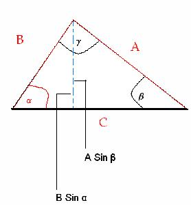

Throughout the New Astronomy, Kepler uses these trigonometric “short cuts,” such as the Law of Sines, here is a geometrical proof and an example will follow:
If you have a triangle with two known sides and one given angle (the red indicates the know variables), this satisfies the requirements to use the law of sines.

In the following diagram above, the dotted line (blue) can be considered as dropped from radius A or B. This line is both (A Sinβ) and (B sin α). Dividing both by AB, you get,
| (A Sin β) |
Therefore,
| (Sin β) |
Now take the example from Chapter 19 (p.282) and follow how Kepler uses this:
"In Tycho BA is shown as 97,000, and AC as 101,400, while in the correction which is to follow, BA turns out a little longer and AC a little shorter; they are not equal, however. Now because in Ch.13 above,through two procedures independent of the present enquiry, the angle BAD was found to be about 1°50' at the limit (about 16°Leo), therefore, at four or five degrees from the limit it will be 1°49(1/2)'. But HBD, the apparent latitude in 1585, was 4°32'10''. Hence, given the angles HBD and BAD, their difference BDA of 2°42'40''is also given. Now as the sine of BDA is to the known length BA so is the sine of BDA to BA. So that if BA is taken to be 97,500, DA comes out to be 163,000. But if BA be 100,000, DA will be 167, 200. (p.283)
Given the angles HBD and BAD, and their difference, BDA of 2°42'20'' you have :
| (Sin BDA) |
| (Sin 2°42 ' 20'') |
Kepler pulls out his trusty sines table to find the sines of these angles and a little cross multiplication to find DA, for example:
Now we have the following:
DA is approximately 163,358